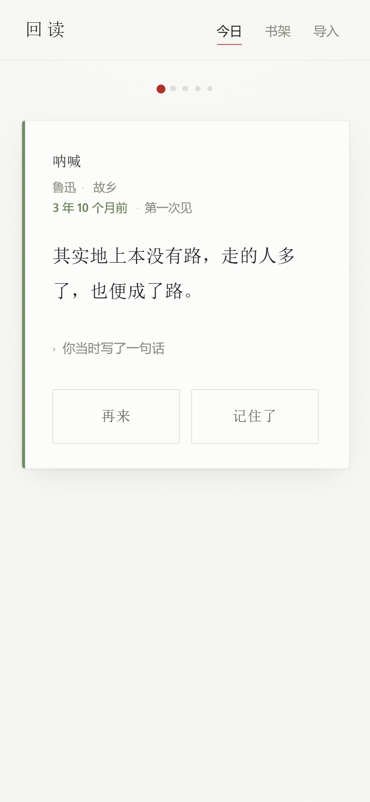

当我沉默着的时候，我觉得充实；我将开口，同时感到空虚。
那年冬天读的，没读懂，先划下来。
再来记住了
当我沉默着的时候，我觉得充实；我将开口，同时感到空虚。
微信读书 App 没有「导出全部笔记」这个功能，所以做了一个书签来代替。它不是插件，不用安装，只在微信读书的网页上运行。
打开回读的导入页，把「取回我的划线」拖到浏览器书签栏。到 weread.qq.com 登录后点一下它，会下载一个 json 文件。
把那个文件拖进回读。它读完就存在浏览器里，不会发到任何地方。重复导入不会丢掉你的回顾进度。
看完点「记住了」或「再来」。记住了的三天后再见，再来的明天见。今天的五条读完，就到此为止。
卡片先只给你看当年划的原文，下面一行小字「你当时写了一句话」，点一下才展开。因为真正让人停一下的不是书里那句话，是你当时到底在想什么。一上来全摊开，那一下就没了。
绝望之为虚妄，正与希望相同。
这个项目没有服务器。下面每一条都不是「暂时没做」，是不打算做。
打开就能用。没有注册，没有登录，也没有人知道你在读什么。
划线只存在这台设备的浏览器里。换设备就再导一次，文件还在你手上。
它不总结，不解读，不替你写。回来的每一个字都是你自己划过、写过的。
没有关注，没有点赞，没有排行。这是你一个人和过去的自己之间的事。
它是一个网页，但可以像应用一样装在手机上。装完全屏，没有浏览器边框，在地铁里没信号也照样能翻。


取数走的是微信读书网页端的非官方接口。人家一改，书签就会失效。这是这条路最大的风险，GitHub 上现有的几个导出工具走的是同一条路，同样脆弱。
网页端拿不到纯划线，只拿得到「划线加想法」的配对。也就是说，你只划了线没写字的那些，暂时进不来。
Kindle 和 Cubox 还没做。手上没有真实样本，不想凭文档猜着写解析器。如果你愿意提供一份自己的，我来写。